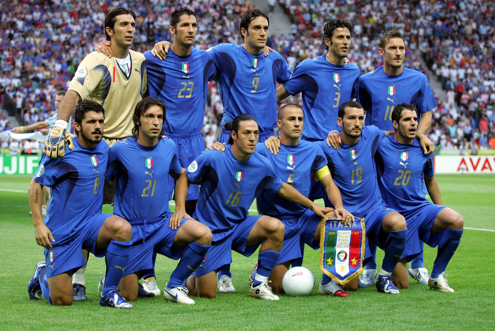
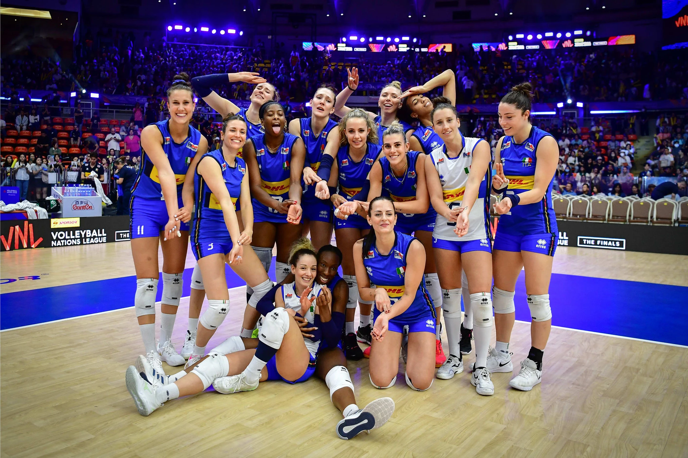
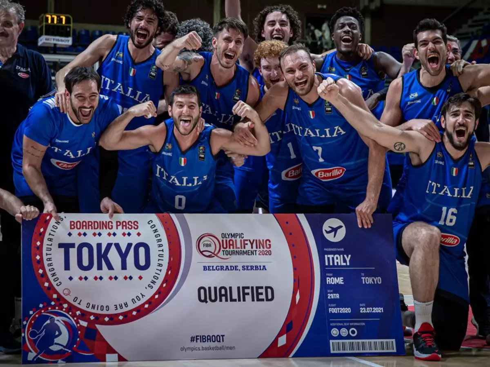

Os três esportes mais populares e influentes na Itália, considerando tanto a prática quanto o impacto cultural, são:
O futebol na Itália, conhecido culturalmente como Calcio, é uma das maiores paixões nacionais e possui uma das trajetórias mais vitoriosas e tradicionais do esporte mundial. O país é representado pela célebre Seleção Italiana de Futebol (a Squadra Azzurra), tetracampeã da Copa do Mundo (1934, 1938, 1982 e 2006). No âmbito doméstico, o esporte é gerido pela Federação Italiana de Futebol e movimenta multidões por meio de rivalidades históricas e estádios lendários.

A Itália é a maior potência do vôlei mundial na atualidade. Suas seleções dominam o cenário global, com as mulheres sendo as atuais campeãs olímpicas e os homens ostentando o bicampeonato mundial. Além disso, o país abriga as ligas de clubes mais ricas e competitivas do planeta, que atraem os principais astros internacionais e funcionam como a "NBA" do esporte.

O basquete é o segundo esporte mais popular na Itália, liderado pela tradicional liga Lega Basket Serie A (LBA). O cenário é dominado pelas potências Olimpia Milano e Virtus Bologna, que disputam as semifinais dos playoffs masculinos neste mês de maio de 2026. No feminino, o Famila Schio sagrou-se campeão recentemente. O esporte no país destaca-se por sua forte presença na elite europeia e por uma base juvenil sólida.
